외과학 석사 대표원장
대표원장이 직접 진료하고, 수술 전 평가부터 마취와 회복까지 전 과정을 책임감 있게 관리합니다.
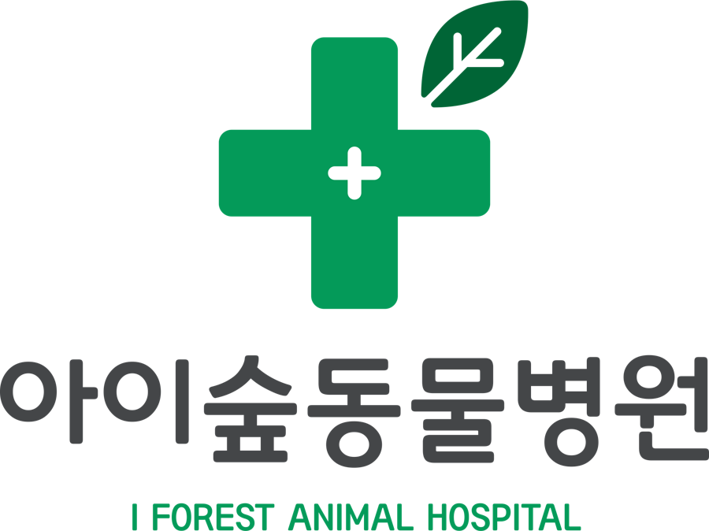
진료 예약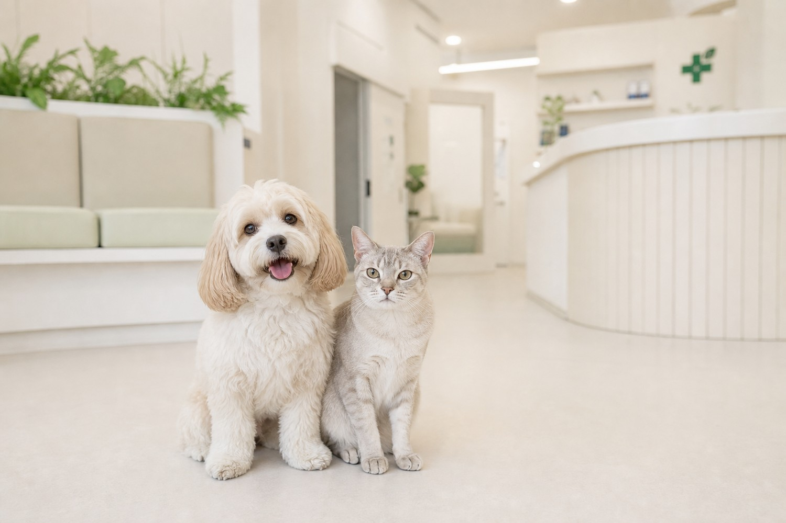
인사말
LIFETIME CARE
예방부터 수술, 만성질환 관리까지
아이의 나이와 생활환경을 함께 고려하며,
아이에게 가장 적합한 진료를 이어갑니다.
ABOUT I FOREST
아이숲동물병원은 작은 변화 하나까지 놓치지 않는 꼼꼼한 문진을 바탕으로, 아이마다 다른 상태와 생활습관을 세심하게 살핍니다.
정확한 진단을 바탕으로 꼭 필요한 검사와 치료를 신중하게 결정하며, 보호자가 충분히 이해하고 안심할 수 있도록 함께 소통합니다.
한 번의 치료에 그치지 않고, 아이의 평생 건강을 함께하는 주치의가 되겠습니다.
생활습관과 작은 변화까지 놓치지 않고 살핍니다.
필요한 검사로 정확한 진단의 근거를 마련합니다.
진단부터 치료 과정까지 이해하기 쉽게 설명드립니다.
아이에게 꼭 필요한 치료를 끝까지 책임집니다.
WHY I FOREST
정확한 진단과 따뜻한 설명, 그리고 아이의 평생 건강을 함께 보는 진료 시스템을 갖추었습니다.
대표원장이 직접 진료하고, 수술 전 평가부터 마취와 회복까지 전 과정을 책임감 있게 관리합니다.
고양이 전용 대기실과 진료실을 운영하여 낯선 환경에서의 스트레스를 줄입니다.
입원 중인 아이의 상태를 의료진이 지속적으로 확인하며 회복 과정을 세심하게 관리합니다.
증상과 검사 결과를 바탕으로 정확하게 진단하고 보호자가 이해하기 쉽게 설명합니다.
수술 전 검사, 마취 위험도 평가, 통증 관리까지 안전한 치료 과정을 준비합니다.
예방부터 만성질환 관리까지 아이의 나이와 생활환경을 함께 고려해 진료를 이어갑니다.
EQUIPMENT & CARE
아이의 상태를 더 정확히 파악하고 안전하게 치료하기 위해, 검사부터 수술과 회복까지 필요한 장비와 진료 환경을 갖추었습니다.
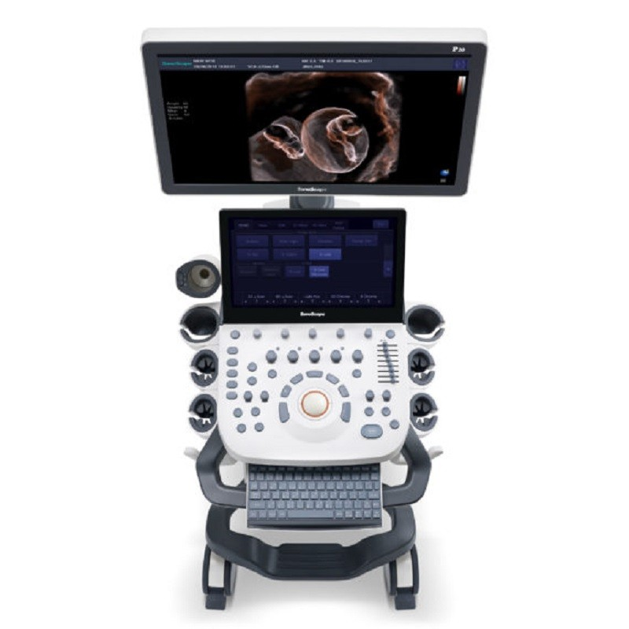
SONOSCAPE P20 Pro Ultrasound
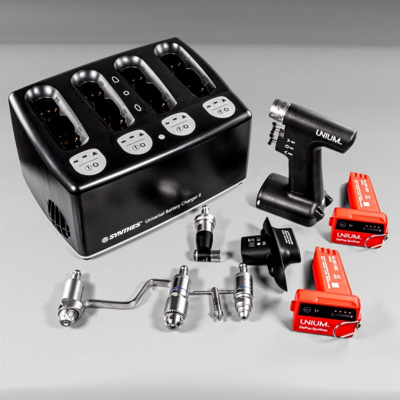
Synthes Orthopedic Drill
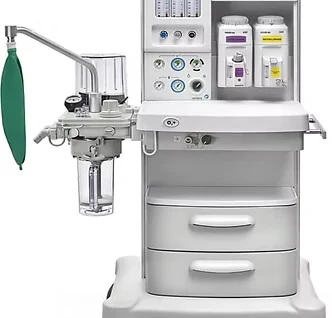
WATO EX-20 Anesthesia
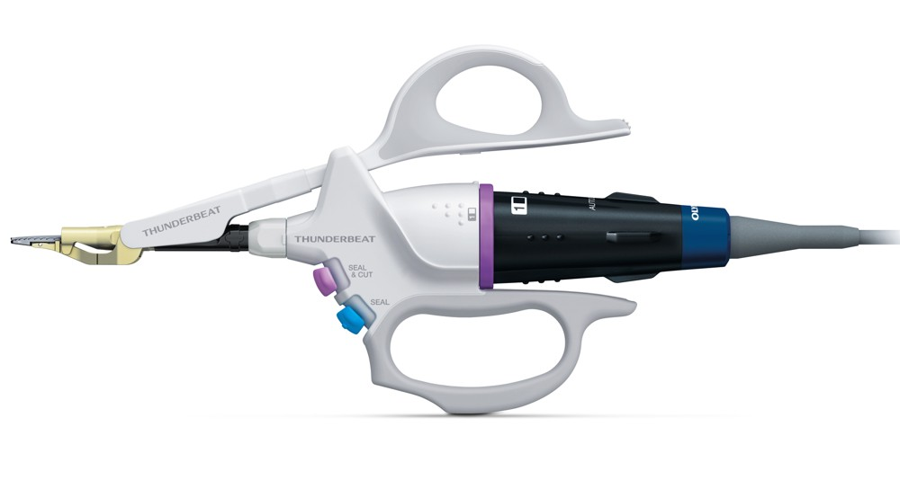
THUNDERBEAT Vessel Sealing
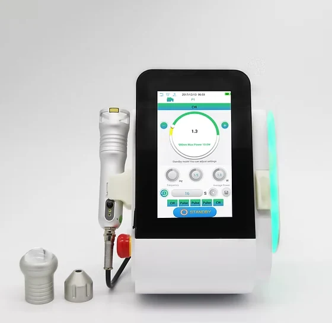
P1-PLUS Rehabilitation Laser
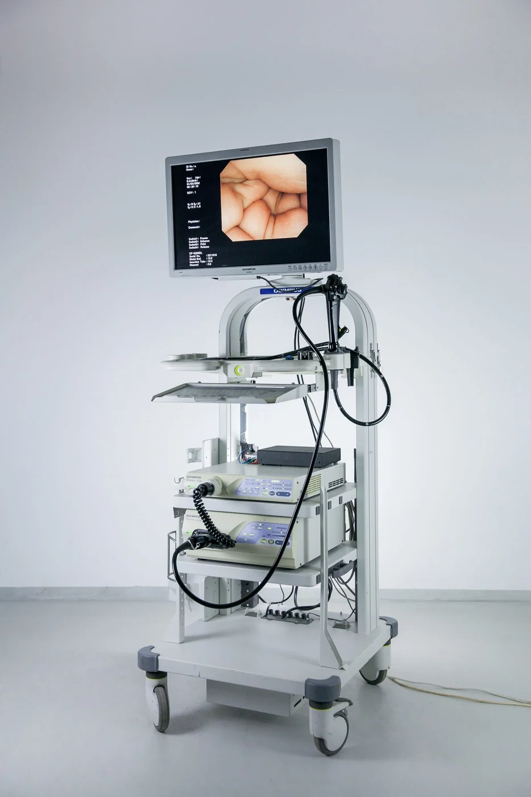
OLYMPUS CV-260 Endoscopy
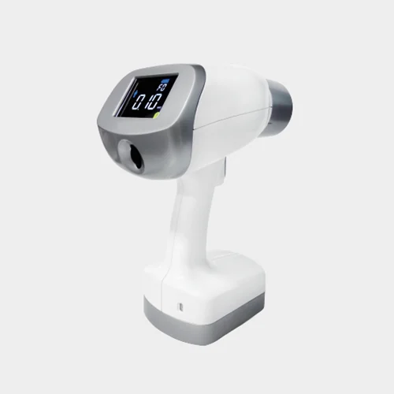
NANORAY Dental X-ray
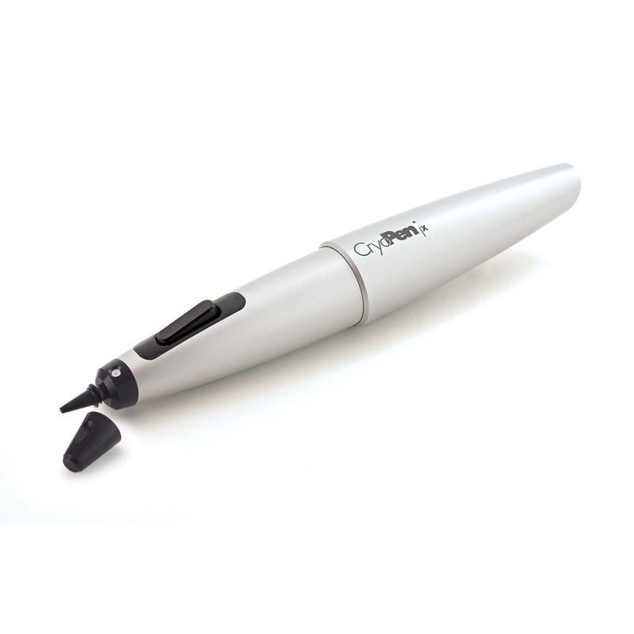
CryoPen
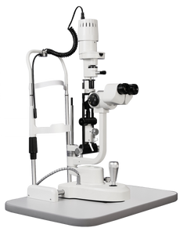
Slit Lamp Biomicroscope
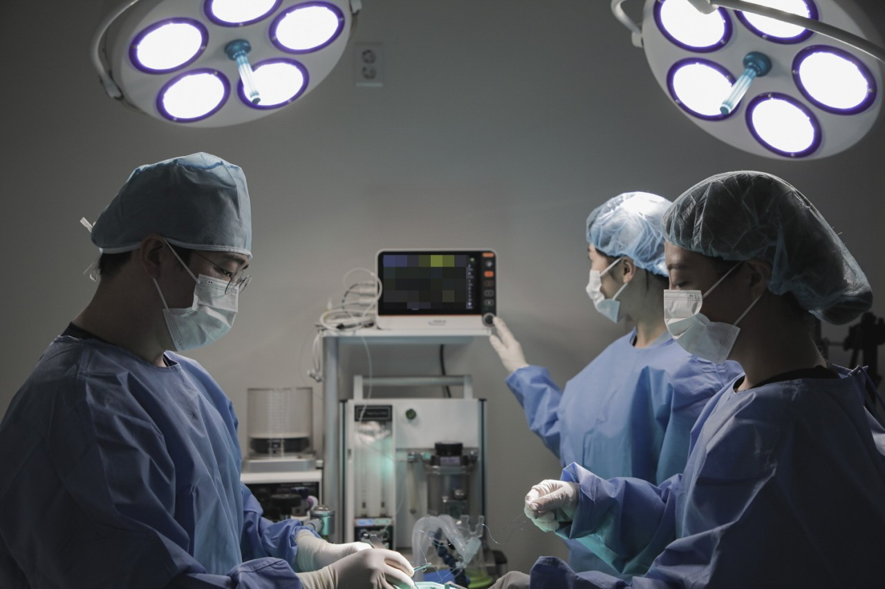
SURGERY CENTERED CARE
안전한 수술은 철저한 준비에서 시작됩니다.
외과학 석사 대표원장이 직접 집도하며, 수술 전 평가부터 회복까지 모든 과정을 책임지고 관리합니다.
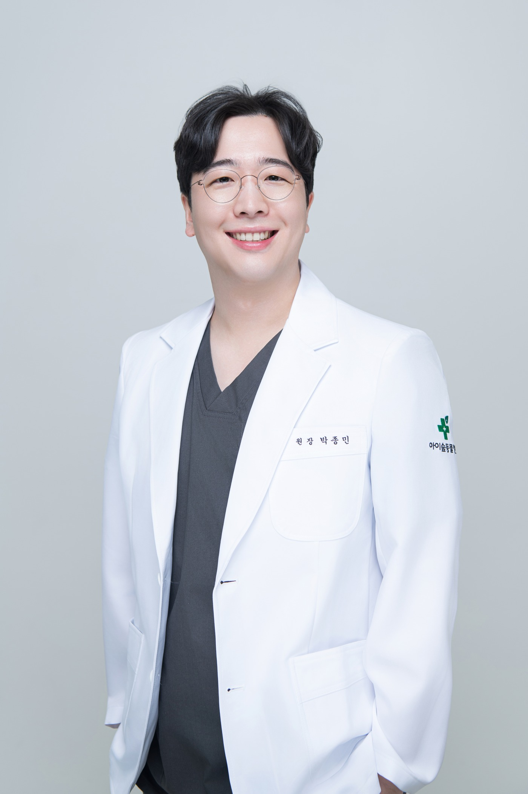
MEDICAL DIRECTOR
한 번의 치료보다, 아이의 평생 건강을 생각합니다. 필요한 치료를 정확하게 설명하고, 아이에게 가장 적합한 진료를 신중하게 제공합니다.
Biomechanical Comparison of Cerclage Fixation Techniques in a 3D-Printed Canine Tibial Long-Oblique Fracture Model
건국대학교 수의외과학 석사 학위논문DIAGNOSTIC IMAGING CONSULTANT
아이숲동물병원은 영상 수의사와 협력하여 X-ray뿐만 아니라 심장초음파와 복부초음파까지 전문적인 영상 판독을 제공하고 있습니다. 보다 정확한 진단과 치료 계획 수립을 위해 영상의학 분야의 자문 시스템을 운영합니다.
DEPARTMENTS
예방부터 외과수술, 만성질환 관리까지 아이의 생애주기에 맞춘 진료를 제공합니다.
예방접종과 심장사상충 예방, 내·외부 기생충 관리를 통해 아이가 건강한 일상을 오래 이어갈 수 있도록 돕습니다.
구토, 설사, 피부질환부터 노령성 질환과 만성질환까지 정확한 진단을 바탕으로 치료합니다.
외과학 석사 대표원장이 직접 진료하며, 정형외과와 일반외과, 치과수술까지 안전한 수술을 위해 최선을 다합니다.
심장병과 쿠싱증후군, 갑상선 질환, 당뇨병 등 지속적인 관리가 필요한 질환을 체계적으로 진료합니다.
나이와 품종, 생활환경을 고려하여 아이에게 맞는 건강검진을 계획합니다.
복부초음파, 심장초음파, 디지털 X-ray를 활용하여 정확한 진단을 돕습니다.
고양이 전용 대기실과 진료실을 운영하며, 스트레스를 줄인 편안한 진료 환경을 제공합니다.
CASE ARCHIVE
아이숲동물병원에서 직접 진료하고 치료한 실제 사례입니다. 각 사례를 클릭하면 자세한 진료 과정과 치료 내용을 확인하실 수 있습니다.
HOURS
정확한 진료시간과 예약 가능 여부는 전화 문의 후 방문해 주세요.
02.6951.5100 전화 문의IFOREST LOCATION
처음 방문하시는 보호자분들도 편하게 찾아오실 수 있도록
위치와 주차, 대중교통 정보를 안내드립니다.
병원 앞 전면 주차 2대 가능
7호선 철산역 또는 광명시청 정류장 이용
월-토 10:00 - 20:00
점심시간 13:00 - 14:00 · 일요일 휴진 전화 문의하기아이숲동물병원의 다양한 진료 이야기를 확인해 보세요.